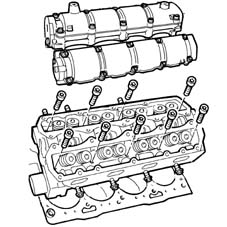
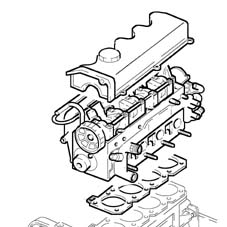

Introduction - CYLINDER HEAD/S
- Path
- Descriptions > 10 ENGINE UNIT > 1016 CYLINDER HEAD/S > Introduction - CYLINDER HEAD/S
- Kind
- system description
- Applies to
- all engines; all production periods
- Interactive page
- https://sloeber94.github.io/elrnDB-fMltpl/en/#/2892419
Applies to: engines: 1.6 16v; all production periods
PETROL
The cylinder head is he monolithic type made from aluminium alloy.
The four valves per cylinder are mounted in their respective guides, operated by two camshafts via hydraulic tappets.
The valve guides are installed by interference fit in their seats in the cylinder head.
The inner diameter is finished off after assembly, using a specific reamer.
The camshafts are fitted in two integral camshaft housings, without a tappet cover.
The cylinder head gasket is of the Aramide fibre type, and there is no need to retighten the cylinder head at all during the life of the engine.

BI-FUEL/METHANE
The cylinder head specifications are the same as for a petrol fuel system with exhaust valve seats made from a special material to prevent the oxidation by the combustion products of the methane.
Applies to: engines: 1.9 JTD 8V; all production periods
The cylinder head is of aluminium and silicon alloy.
The two valves per cylinder, parallel and vertical, are fitted in the valve guides and are operated by a single overhead camshaft with cams acting on mechanical type tappets.
The valve guides are an interference fit in the cylinder head seats and the internal diameter is corrected, after fitting, using a special reamer.
Compared with heads with ante-chambers, the entire combustion process takes place in the combustion chamber in the piston.
The cylinder head gasket is of the Aramide fibre type, and there is no need to retighten the cylinder head at all during the life of the engine.

Applies to: engines: 1.6 16v; all production periods; only with equipment: BIPOWER and BLUPOWER
The cylinder head is the aluminium alloy, monolith type with the same specifications as the cylinder head for petrol fuel systems with the exception of the exhaust valve seats made from a special material to prevent oxidation by the methane combustion products.
The four valves per cylinder are mounted in their respective guides, operated by two camshafts via hydraulic tappets.
The valve guides are installed by interference fit in their seats in the cylinder head.
The inner diameter is finished off after assembly, using a specific reamer.
The camshafts are fitted in two integral camshaft housings, without a tappet cover.
The cylinder head gasket is of the Aramide fibre type, and there is no need to retighten the cylinder head at all during the life of the engine.
Applies to: engines: 1.6 16v; all production periods; only with equipment: Euro 3 and BIPOWER
The cylinder head is the aluminium alloy, monolith type with the same specifications as the cylinder head for petrol fuel systems with the exception of the exhaust valve seats made from a special material to prevent oxidation by the methane combustion products.
The four valves per cylinder are mounted in their respective guides, operated by two camshafts via hydraulic tappets.
The valve guides are installed by interference fit in their seats in the cylinder head.
The inner diameter is finished off after assembly, using a specific reamer.
The camshafts are fitted in two integral camshaft housings, without a tappet cover.
The cylinder head gasket is of the Aramide fibre type, and there is no need to retighten the cylinder head at all during the life of the engine.
Applies to: engines: 1.6 16v; all production periods; only with equipment: GPOWER and Euro 3
CONSTRUCTION FEATURES
The cylinder head is the aluminium alloy, monolith type with the same specifications as the cylinder head for petrol fuel systems with the exception of the exhaust valve seats made from a special material to prevent excessive, premature wear by the LPG combustion products due to the lower lubrication properties of LPG.
The four valves per cylinder are mounted in their respective guides, operated by two camshafts via hydraulic tappets.
The valve guides are installed by interference fit in their seats in the cylinder head.
The inner diameter is finished off after assembly, using a specific reamer.
The camshafts are fitted in two integral camshaft housings, without a tappet cover.
The cylinder head gasket is of the Aramide fibre type, and there is no need to retighten the cylinder head at all during the life of the engine.